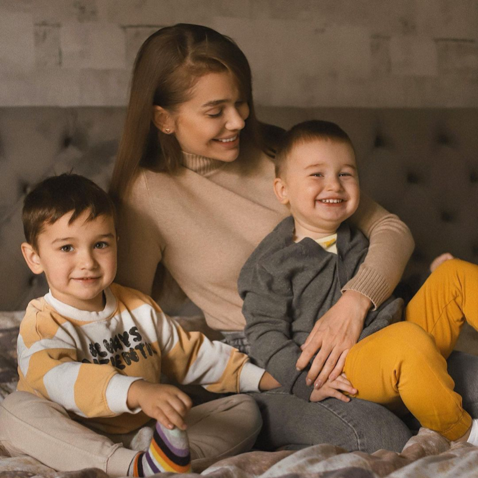

Якась характеристика 1
ТЕКСТТЕКСТТЕКСТмТЕКТТЕКСТ
Якась характеристика 2
ТЕКСТТЕКСТТЕКСТмТЕКТТЕКСТ
Якась характеристика 3
ТЕКСТТЕКСТТЕКСТмТЕКТТЕКСТ
Якась характеристика 4
ТЕКСТТЕКСТТЕКСТмТЕКТТЕКСТ
Заголовок Біографія
Серед предків Аврори Дюневанд — Моріц Саксонський, маршал Франції, що займався деякою літературною працею. Бабуся з батьківського боку була графинею.
Аврора була пізньою дитиною (і батьку, й матері було за 30 на час одруження). Мати була з простого народу, графиня шлюб не схвалювала. Після загибелі батька внаслідок нещасного випадку графиня і мати Аврори розірвали стосунки. Проте онука нагадувала бабусі сина і тому залишилась в її маєтку.
Отримала освіту в Августинському жіночому монастирі Парижа, читаючи багато національної і перекладної літератури.
У 18 років під тиском графині побралася з бароном Дюдеваном, позашлюбною дитиною. Аврора не успадкувала графський титул бабусі і вважалася баронесою. Народила сина і дочку, проте тривалим шлюб не став, і пара таємно розійшлася, щоб уникнути скандалу. За збереження таємниці Аврора отримала грошову підтримку від чоловіка і право далі носити титул баронеси, і перебралася в Париж.

Аврора Дюдеван відрізнялася вільною поведінкою, захоплювалася «чоловічими» видами спорту, носила чоловічі костюми. Низка її коханців розпустила багато чуток. Свекруха забрала у Аврори дочку з моральних мотивів. Не мала прав скандальна баронеса і на родинну садибу Ноан (отримала їх лише після смерті бабусі і чоловіка). Зиму проводила в Парижі, а влітку з дітьми переїздила до Ноана.
Восени 1836 Дюневан знайомиться з Шопеном і, попри різницю в віці (34 і 28), зав'язує з ним стосунки тривалістю вісім років. Турбуючись про Шопена, жартома називала його своєю третьою дитиною. В підсумку написала літературний твір, де в інфантильному героєві Шопен упізнав себе. Ежен Делакруа написав їхній подвійний портрет.
Аврора Дюневан померла від гострої кишкової непрохідності в садибі Ноан поблизу містечка Шатору департаменту Ендр, де й похована. У ХХ ст. садиба стала літературним музеєм. Були пропозиції перенести прах письменниці у паризький Пантеон, проте від них відмовилися.

Восени 1836 Дюневан знайомиться з Шопеном і, попри різницю в віці (34 і 28), зав'язує з ним стосунки тривалістю вісім років. Турбуючись про Шопена, жартома називала його своєю третьою дитиною. В підсумку написала літературний твір, де в інфантильному героєві Шопен упізнав себе. Ежен Делакруа написав їхній подвійний портрет.
Аврора Дюневан померла від гострої кишкової непрохідності в садибі Ноан поблизу містечка Шатору департаменту Ендр, де й похована. У ХХ ст. садиба стала літературним музеєм. Були пропозиції перенести прах письменниці у паризький Пантеон, проте від них відмовилися.